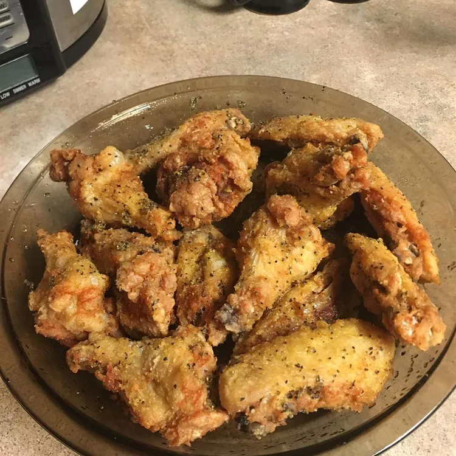

Easy Lemon-Pepper Chicken Wings

a wonderful snack for a football game, a reunion with family/friends, anywhere!
Ingredients:
- 2 cups of oil, or as needed.
- 2 tablespoons of extra-virgin olive oil.
- 1 tablespoon of lemon-pepper seasoning.
- 12 chicken wings.
Steps:
- Heat oil in a deep-fryer or large saucepan to 375 degrees F (190 degrees C).
- Stir olive oil and lemon-pepper seasoning together in a bowl; set aside.
-
Fry wings in hot oil until no longer pink at the bone and the juices run clear,
about 8 minutes. An instant-read thermometer inserted near the bone should read
165 degrees F (74 degrees C).
- Toss hot wings with lemon-pepper mixture to coat.
return to all recipes